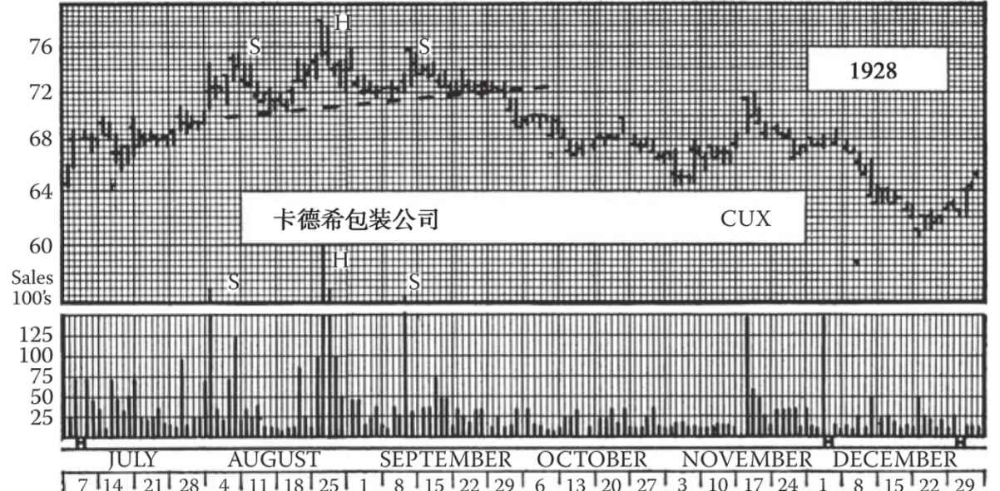
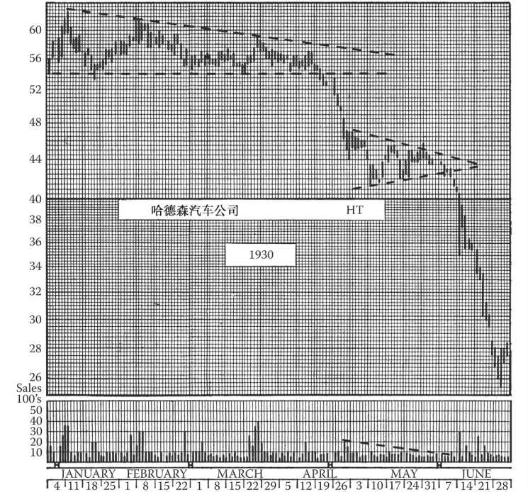
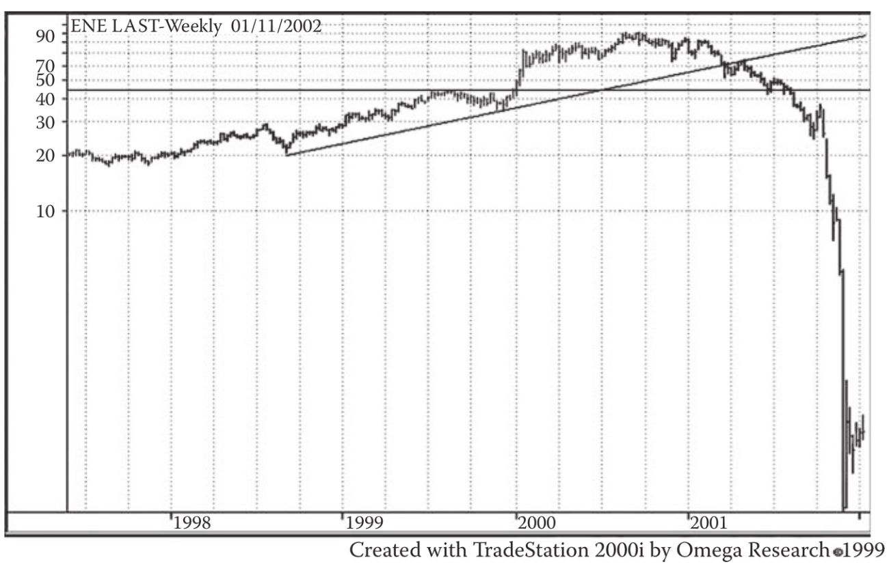
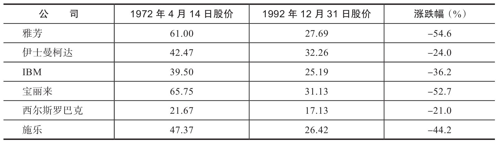
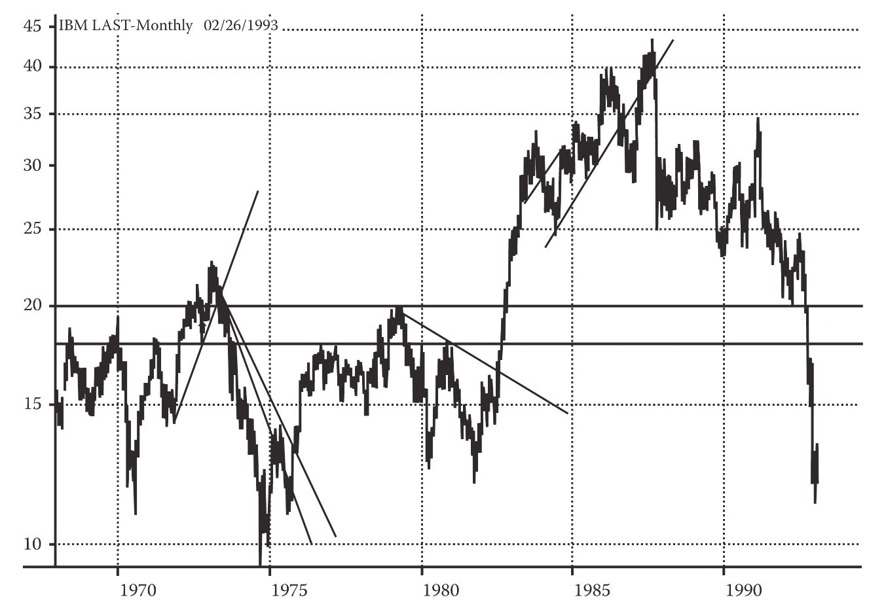
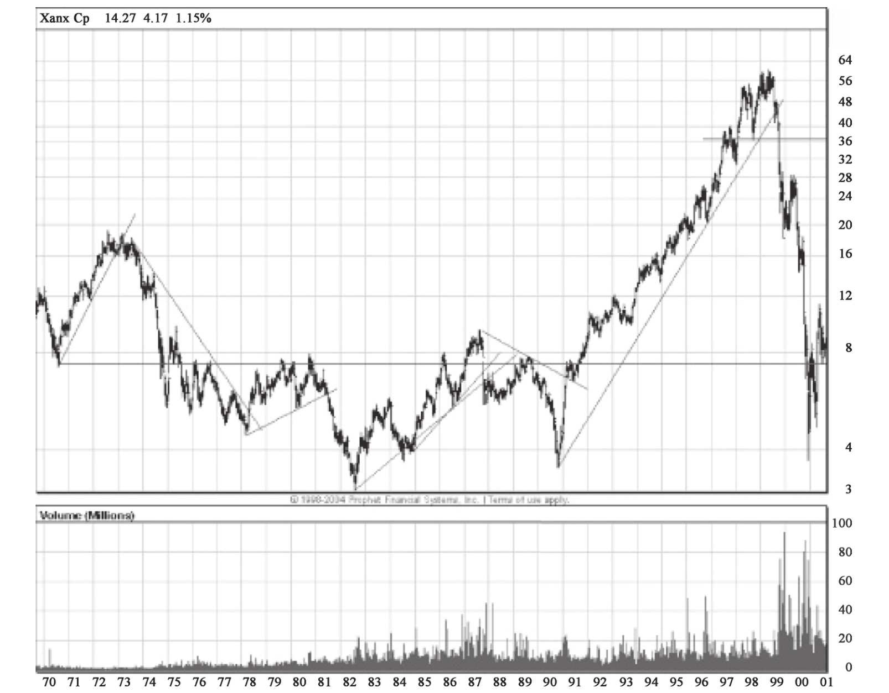

（编者按：本章中，迈吉首先解答了中短线投机者的战术问题。本章后半部分解答了长线投资者的战略及战术问题，并就“投机者”一词展开讨论。）
在牛市中，也是有可能亏钱的（不少交易员遇到过这种情况）。同样，在熊市中做空也可能亏钱。你对长线趋势的预判可能十分精准，你的长期策略也可能完全正确，但如果没有合适的战术，就好比作战缺少了部署能力，你就无法运用所学的知识达成投资目标。
有几个原因会造成交易员（特别是新手）常犯此类错误。在买入股票后，如果股价上涨，他们对于涨到多少获利了结没有打算；如果股价下跌，他们对跌到多少该进行止损也一无所知。由此导致的结果是，这些交易员总是亏钱，而且越亏越多，很难做到及时止损。同时，他们总是很在乎交易成本。此外，这些交易员知道很难捕捉到最高点和最低点的机会，因此他们在决定交易之前，也常任凭股市波动而无动于衷。即使他们的判断是准确的，交易仍有可能一度出现10%以上的浮亏（参见图18-1）。可想而知，如果在获利行情到来之前，交易员就丧失信心，草率离场，那么他很有可能与赚钱的机会擦肩而过。

图18-1 在牛市中持有股票也可能遭受损失。在这张图上，该股长期顶部的形成不是在1929年，而是在1928年夏季。此后一年多的时间里，多数股票和指数持续走强。但卡德希包装公司这只个股呈稳步下跌态势，在1929年大恐慌降临之前就已跌破50美元，且持续下跌超过4年，最终跌到20美元。该股走势呈现典型的头肩形态，除了8月21日头部出现交易量异常。该股11月中旬出现了一次完美的反抽。这印证了我们之前强调的观点：即便其他股票走势强劲，某只个股头肩顶也不可忽视。
头肩形包括单一或复合头肩形态，长期或中期顶部的头肩顶以及长期或中期底部的头肩底。在交易量、持续时间和突破表现上，头肩形和箱体、上升和下降三角形大同小异，而保守型股票的头肩形则类似圆形反转
长线投资者在接近底部时买入并持有，直至行情接近顶部时，他们可以清仓，持有现金或债券，直到股市再次触底（可能要等上几年时间）。此类投资者不会频繁遇到何时买卖的难题。但这一策略的假设是交易员能够精准地判断高点和低点的时机。基于长线趋势的长期投资远不像“低买高卖”那么简单，这是个漫长的过程，但收益十分可观。（编者按：请注意第4章中关于道氏理论的论述。）
“投资”和“投机”本质上存在差异。在分析时，需要明确两者的概念并确保不要混淆（参见图18-2）。两种策略都是合理、可行的，但一旦混淆，则可能招致严重后果甚至损失惨重。
第一个差异是投机者只盯着股票本身，而不管公司的基本面。确切地说，股票代表对一家公司的所有权，但股票不同于公司，好公司的股价常常较低，而差公司的股价有时异常惊艳。需要牢记公司与股票并不完全对等。技术方法只研究股票买方、卖方和持有方对股票价值的看法。

图18-2 如果是你，该如何交易哈德森汽车公司这只股票？1929年10～11月大恐慌时期，道指从9月的历史高位386.10点下跌到11月的198.69点。1930年4月的一次反弹将指数拉回294.07点，反弹了95个点，力挽51%的跌幅，堪称一次完美的修正。
假设你在该股从1929年高点93.5美元大跌至56美元时买入，并认为该股票下跌37美元后的价格处于“合理”区间。在1930年前几个月，日线图逐步显现上图所示的形态（在今天来看，你会发现这是个下降三角形）。当时的你是否会在51美元的位置及时止损？在该股收于54美元以下后，你是否会在第2天卖出该股票？你是否预计其未来会上涨，因而在50、48、40美元这些“合理”价位继续买入？你是否“长期看好该股”，在股价跌至6月的25.5美元时依然持有？甚至在1932年该股跌至3美元以下的长线底部时，仍坚定持有（参见图8-22）
第二个差异是分红。“纯投资者”通常只考虑持有股票的“收益”或潜在收益，即股票的现金分红。这类投资者十分罕见。（编者按：现已基本绝迹。）许多公司可以保持稳定的分红，市值却会出现75%以上的大幅缩水。也有一些公司通过股价变动给投资者带来了高额的回报，而分红却少得可怜。如果投资者只看重分红率，那么他唯一要研究的就是计算每次股票发行的分红比率；也就是说，如果以分红为价值导向，那么不分红的股票价值为零。
但从技术角度看，“收益”与资本利得不同，基本无须考虑。出售股票所套现的资金减去成本，加上收到的分红等于总回报。投资者的总回报取决于股价的涨跌和公司的分红。在卖空交易中，卖空方在归还股票时必须支付分红。
还有第三个需要认清的事实：如果一个“纯投资者”以30美元的价格购入股票，然后该股价格跌到22美元，那么他通常会坚称自己没有遭受损失，因为他并没有卖出。此时，他常会宣称对该股票的发行公司信心满满，并且会一直持有直到股价回升。此类投资者甚至会说自己从来没有亏过钱。
但如果他在1953年以超过40美元的价格买入斯图特贝克公司（Studebaker）的股票，并在1956年股价跌至5美元时继续持有（编者按：或在20世纪80年代以25美元买入奥斯本公司（Osborne）的股票，并在0美元时继续持有。第9版编者按：或在2000～2010年买入安然公司（Enron）和世界通信公司（WorldCom）的股票；或是买入了贝尔斯登（Bear Stearns）、雷曼（Lehman）等公司的股票），那么他又会做何解释呢？对他而言，浮亏不算亏损，只有真正通过交易“实现”了的才算亏损。
他相信股价最终会反弹至他的买入价之上，但事实上，这种想法只不过是做梦。
此外，我们还要怀疑他是否能始终如一地采用这种解释。举例来说，如果他之前以30美元买入了另一家公司的股票，而现在该公司股价涨到了45美元，那么他是否仍认为在卖出股票之前，都没有盈利或亏损这一说？恐怕他早就开始谈论起自己的“盈利”了？
确认盈亏时，不论是以“已实现”或交易的结束作为基准还是以某个时刻的“市价”作为基准都可以，但如果采用一种方式无视自己的错误，又采取另一种方式强调自己的成功，那么这不过是在自欺欺人。对这两个概念的混淆酿成了许多悲剧。（编者按：我们甚至可以说，混淆这两个概念常常导致鲁莽草率的行为。现在，市面上有许多投资组合管理软件提供盯市功能，如果投资者在这种情况下仍混淆概念，最终只会自食其果。）
如果你使用技术分析的方法进行交易，那么用“市价”作为盈亏的基准更为合理。换句话说，你在某个时点的盈亏是和当天股票的收盘价对比得出的。
让我们总结一下前文的要点：①切勿在公司及其股票之间画等号；②切勿以股息收益率为基础判断某个股票的“价值”，而不考虑市价；③切勿在衡量盈亏时，混淆使用“已实现”和“市价”的概念。
技术派投资者一般不采取买入并持有的投资策略。有时，持有某股票数月或数年显然更胜一筹；但也有时候，不论盈亏与否，迅速清仓更有优势。成功的技术派投资者从来不会因为情绪的影响，把自己困在一个已经难以维系的境地中。
使用技术分析的交易老手可通过较短的中线趋势获利，而且他们的交易历史表明，即使短线交易的佣金和所得税更高，他们操作此类较短趋势的盈利也可能超过操作长线趋势的盈利。
但我们也要明白，要以这种方式获利并不简单。只有时刻保持警惕并严格遵循系统性的技术交易方法，投资者才有可能成功获利。如果将市场看作一台赌博机，那么和轮盘或扑克相比，它更没有规律；我们几乎无法通过任何简单的数学系统来跑赢市场。如果你不相信，可以仔细研究一下你认为能跑赢市场的法则，观察这套法则在一个较长时间段的市场表现。或者扪心自问，你是否说得出任何一个仅靠此类法则就成功的投资者。（编者按：本书出版之后，许多交易者借助计算机技术和金融理论的进步，成功创建了客观的法则，并在金融市场中大获成功。但市场常常会逐渐熟悉此类法则，其运行模式会发生相应的改变。因此，机械交易法则的效果一般会随着时间推移逐渐变弱，甚至彻底失效。）
技术分析不是一个简单的数学过程，尽管其中也有需要运算的内容。技术分析在历史经验的基础上，以图表的方式研究市场趋势的重要性。它认识到市场是一个敏感的机制，所有人的观点最终都反映在了一个数字上，即某一特定时刻的股价。我们之前学习的各种形态并不是没有意义或随机的。这些形态表现了实际价值的变化，反映出人们的预期、希望、恐惧和行业的动向，并综合考虑了其他一切已知的信息。我们并不需要知道某个特定形态体现出的是具体哪一种人类情绪或哪一个行业动向。重要的是，我们要能辨识出这种形态，并知道形态完成后股价将如何变动。
短线利润是利用趋势变化赚取的回报，也是为市场提供流动性而获得的回报。与长线投资者相比，短线投资者需要快进快出，并自负盈亏。你不会刻意去维持特定股票的仓位（虽然我们会根据市况，出于风险和利润敞口的考虑，将“综合杠杆”维持在某个特定的水平，这和维持特定股票仓位取得的效果是一样的）。与长线投资者相比，你在每笔交易上的获利更小，但你的操作可以更灵活。
更重要的是，你可以免受市场恐慌期的影响。在恐慌期中，长线投资者一直以来缓慢累积的利润在几天内就会消失殆尽（编者按：类似的恐慌期还出现在1987年和1989年。第9版编者按：2001～2002年也是一样：2001年5月2日道指为11350点，2001年9月17日道指跌至8062点；2002年5月18日道指为10673点，2002年7月22日道指跌至7532点）。而短线投资者在股灾中可能得益于自己的止损指令或市价指令，仅遭受小部分损失。你的大部分资金仍不受影响，可以用于新趋势的交易。（编者按：在“现代交易”中，技术分析师给出的最佳建议就是，即使是长线投资者，也不应该在熊市中死守自己的仓位。）
最后，在讨论交易战术之前，我们需要强调本书的交易方法仅适用于中小型投资者。我们介绍的方法，不论是进场还是离场，根据交易活动和个股的交易量，可以用于零股、100股、200股或是几千股的交易。但不适用于以10000股为单位的大宗股票交易（除非是流通盘极大的股票），因为在这种情况下，投资者自己的买盘或卖盘就会对该股股价产生极大影响。此类大宗交易也遵循与中小规模交易相同的基本趋势和战略，却需要截然不同的交易战术（见图18-3）。（编者按：迈吉曾对我说过，老鼠可以去大象没法去的地方。）
18.1 长线投资者的战略和战术：“投机者”和“投资者”的含义
在迈吉完成本书第18章的撰写后，“投机者”（speculators）和“投资者”（investors）已衍生出了不同的含义，股市文化也经历了巨大转变。纽黑文铁路公司（New York，New Haven，and Hartford Railroad）的股票过去一向受投资者追捧，分红大方，但这样的日子已经一去不复返了，纽黑文铁路公司本身也不复存在。事实上，20世纪初，投资者对于分红的心态已经改变。他们希望得到资本增值，而不是分红。实际上，现在人们认为“成长股”的一个特征就是不分红。显然，以前人们对于“投资者”的定义是买入并持有股票，收取分红的人，而像迈吉一样买卖那些“不合潮流”的“投机性”股票，并进行中线交易的人则被称为“投机者”。“投机者”这个词多少带点贬义。而现在，昔日像迈吉一样的投机者可被称为中线投资者。

图18-3 安然公司不少员工犯下的大错在于，他们的退休投资组合完全没有进行分散投资，资产配置过于单一。但没有进行分散投资并不是最重要的教训。最重要的是，趋势反转时，要及时清仓。这个教训所衍生出的另一个原则是，不要买入处于跌势中的股票，尤其不要买正在大幅跳水的股票。你也许会觉得这一切都是不言自明的，但当时，安然公司的股价已经在以100英里/小时的速度下跌了，迈阿密大学的组合经理却持续吸筹；The Motley Fools公司在安然公司股价一路跌至谷底的过程中也死守持仓不放
今天我们仍可以将任何进行择时交易的人称为“投机者”，但大多数时候，我们把以前被定义为“投机者”的那群人称为交易者（traders）。现在，有些人进行大宗商品交易，但他们和基础资产并没有商业上的利益关系，我们将这些人称为“投机者”，而不是“商业头寸交易者”（commercials），后者指的是基础资产的使用者，或是利用合约进行套期保值的人。现在的“日内交易者”（day traders）相当于以前人们定义的“投机者”，但他们更像是在赌博。
在投资者的各种类型中，以前那些只看重分红、追捧纽黑文铁路公司的投资者现在已经十分罕见了。现在还这样做的可能只有一些大公司的信托部门。它们不想被客户起诉，于是对于上涨的股票也视而不见，避免交易。毕竟，谨慎的投资者“不交易不稳定的个股”，只会投资“安全的资产，比如债券”。在通胀的影响下，债券的实际价值每年会下降1.5%～2%，但他们能带给投资者“保本”的错觉。
18.2 长线投资者的一个定义
我们暂且将长线投资者定义为希望至少获得市场回报率的人，因为长期的经验表明，这完全可以通过被动式指数化投资来实现。在19世纪末20世纪初，无论是长线投资者，还是中线或短线投资者，他们都关心能否匹配市场回报率，因为全世界已经很久没有发生严重的熊市了。道指直奔36000点？这是一个暂时的阶段。随着每一轮牛市到达新高点，牛市持续的概率变得越来越小。
那么，长线投资者为了达到匹配市场回报率的目标，应采用怎样的战略与战术？（第9版编者按：读者可回顾第4章有关道氏理论的内容。）
其实，迈吉描述的投机者（也可称为交易者）所使用的战术与长线投资者偶尔使用的短线战术之间，完全不存在冲突。如果买入或卖出时间在长线投资者的止损位附近，投资者就变成交易者。这时，他可以且应当采用交易者的战术。他关注的时间长度越来越短，最终会聚焦于实时的交易执行。值得注意的是，我们在本书中介绍的制图技术也适用于实时交易数据。所以，如果交易者希望进入实时交易的环境，他就可以用实时图表上的形态来指导交易。而只有真正主动且技术娴熟的长线投资者，才会试图赚到指数涨幅的最后一个或半个点。
18.3 长线投资者的策略
长线投资者的策略是把握长期趋势，即参与延续数月乃至数年的交易。但是，这一策略并不适合长期熊市。当熊市信号出现时，投资者应当及时卖出或对冲。正如第4章的一些例子所示，后者有时显著好于买入并持有策略。
如果目标是不仅要击败市场，还要击败公募基金（只有20%的公募基金能长期跑赢大市，有时所有公募基金都赚不到钱），那么被动式指数化投资就是最理想的策略。此类策略的实施途径有多条，如购买指数基金、购买一揽子股票、购买期货等，其中最有吸引力的一条也许是购买标准普尔存托凭证（缩写为SPDR或SPY）、思柏达道琼斯工业平均指数交易所交易基金（缩写为DIAMONDS或DIA）及类似产品。投资者可根据自己的风险承受度和性格调整战术。他可以在观察到道氏理论信号时，或股价跌破200天移动平均线时，或股价跌破长期或中期趋势线达到一定幅度时（迈吉建议2%，投资者可视情况调整），及时地卖出或对冲。前文所述的SPDR、DIAMONDS、指数期货、期权等都可用于实施此类策略。
每一种策略都必须考虑最坏的情形，也就是熊市。如果一般投资者不坚持做多，那么熊市就并不那么可怕。当市场走熊时，长线策略很快会被投资者抛弃。准备充分的技术派投资者会有及时止损的计划以及执行此类计划的纪律性。
根据此类计划，若市场按预计的方向运行，则不断重新计算止损位，否则坚决抛出。你可将一个资产组合视作一棵果树。为了让树长得好，必须除去不够强壮的枝条；为了提高组合的收益率，必须抛掉走势疲弱的品种。本书多处谈到止损点的计算（见第27、28章）。对于长线投资者，止损点可设为股价跌破200天移动平均线或长期趋势线时（这仅是举例，而非建议）。200天移动平均线被广泛视为长线趋势指标。有些东西正因为人们相信它，而真的变成现实。（第9版编者按：我想强调的是，200只是一个参数，一个例子。投资者可通过自己的研究，找到更适合市场状况的参数。）
现实中，投资者需要观察的，不仅有200天移动平均线或手工绘制的趋势线，还有组合中个股的走势形态、主要指数的走势形态、指数及其成分股的技术形态（如是否正在创新高、整固、沿图表所体现的趋势运行等）。
此外，我们不得不提一下迈吉的“基准点法”（见第28章），它也许是当今最有效的移动止损法（trailing stop method）。
18.4 把握投资节奏
此外，如果你严格遵循本书第31章“不要将所有鸡蛋放在同一个篮子里”的告诫，你就能自然而然地顺应市场变化，根据本书所述的迈吉评价指数，逐步将组合从多头转为空头。这就是本书作者和编辑推崇的策略。
这一切都取决于投资者的目标、脾气和性格。如果他将所有时间都花在市场里，他就可能不是一名长线投资者。长线投资者一般吃得下、睡得香，而短线交易者一般“为伊消得人憔悴”，这个“伊”不一定是钱，也可能是交易活动。在交易者和投资者这两类中，你需要知道自己属于哪一类。而且，你最好在进入市场之前就对自己的脾性有深刻了解，因为在市场中发现自我是要交高昂学费的。
在长线持有和短线博弈之间，并不一定存在冲突，具体取决于手头的资金规模，还取决于投资者希望在交易中投入的时间、精力和金钱。投资者可通过以下方式，只用少量的时间和精力，就实施一项长线投资策略：关注主要的平均指数，在指数向上突破、接近整固形态底部或出现反抽时买入，在股价跌穿趋势线（按第28章的基准点法计算）或支撑区时卖出或对冲。
与中线交易者或投机者相比，长线投资者能接受更大的仓位价值波动。在第28章中有一个应用基准点法的例子，投机者遵循三天基准点法（three-days-away rule），而长线投资者可能遵循三周基准点法或类似方法。当长线投资者怀疑或判断长线牛市临近顶点时，他也可能改用三天基准点法，甚至开始对自己的仓位按日设置止损点。在此类情形下，专业人士常常将止损点设置在略低于前一日收盘价的地方。
应当注意的是，不要将长线投资与“买入并持有”混为一谈。举个例子，在1972年，华尔街一群“最棒、最聪明”的基本面投资分析师挑选出了一组股票，建议投资者买入并持有20年。这些公司都是当时美国经济中的佼佼者，如雅芳（Avon）、伊士曼柯达（Eastman Kodak）、IBM、宝丽来（Polaroid）、西尔斯罗巴克（Sears Roebuck）、施乐（Xerox）。甚至在今天，如果你不曾关注它们的市场表现，你还会以为它们是“蓝筹”。请看下面这张表，其中列示了这些个股的长期表现。

图18-4和图18-5展示了IBM和施乐两家公司的股票走势。

图18-4 这张图充分体现了“买入并持有”策略的危险性。那群“最棒、最聪明”的基本面分析师在IBM股价达到10年高点时向投资者推荐该股，随后IBM股价跌去了一半多。虽然后来从最低点回升，到达两倍于推荐时股价的水平，但在20年持有期结束时，IBM股价比推荐时低40%左右。图上的一些分析线条可为技术派交易者提供操作思路。我常说，股市有牛市、熊市、猴市之分，千万不能一刀切地采用“买入并持有”策略
18.5 小结
长线投资者试图把握市场的长线趋势，道指的此类趋势可能跨越数百乃至数千点，时间上可能长达数月乃至数年。
在这段时期内，长线投资者可适时调整自己的仓位，以求把握中线趋势。当发现中线趋势不利于自己的长线持仓时，他可对自己的投资组合实施对冲，具体取决于个人的性格和偏好。
长线投资者一般偏好具备市场领导地位的个股，用此类个股构建出紧盯主要指数（或指数基金）的投资组合；此外，他还可选择一些投机性的个股，以求提高组合的收益率。

图18-5 和上一张图中的IBM一样，施乐公司的股票也在应该卖出的价位获得了推荐。那张图下面的评论大概也适用于这张。只需看一下该股的长线波动走势，就知道“买入并持有”策略有多愚蠢了。技术分析旨在避免此类愚蠢的做法
长线投资者虽然偏好长线投资，但不会容忍那些走势疲软、持续下跌或跑输大市的个股。对此类股票，他会果断地斩仓止损。同时他会继续持有那些表现较好的股票，以求扩大盈利。这是真正的金科玉律，不明白这一条的投资者将总是亏钱。此外还有一条金科玉律：买涨不买跌，卖跌不卖涨。
真正懂行的投资者还试图从熊市中赚到钱。专业投资者对做多和做空一视同仁，这就是专业投资者与普通投资者之间最大的区别。
而日内交易者，可在匿名戒赌协会（Gamblers Anonymous）的网站（http://www.gam-blersanonymous.org ）上获得一些有价值的建议。